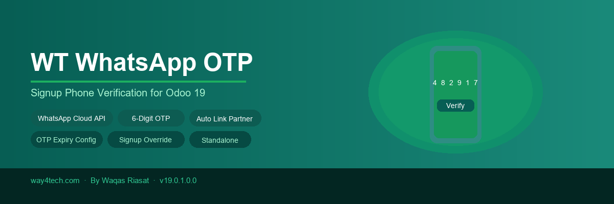

Verify customer phone numbers via WhatsApp OTP during Odoo signup — standalone, works with any module, zero configuration required beyond a Meta API token.

Get WhatsApp OTP running on your Odoo signup page in 5 steps.
Log in to developers.facebook.com, create a new App of type Business, and add the WhatsApp product to it.
In WhatsApp Manager, create a message template named phone_otp with one body variable {{1}} containing the code. Wait for Meta approval (usually <24 hours).
Install WT WhatsApp OTP from Odoo Apps. Required dependencies (Portal, Auth Signup, Website) install automatically.
Go to Settings → Website → WhatsApp OTP. Paste your API Token, Phone Number ID, template name, then tick Enable WhatsApp OTP on Signup.
Everything you need for secure phone verification on Odoo signup — nothing more, nothing less.
Sends OTP codes via the official Meta WhatsApp Cloud API (v18.0). No third-party intermediary — direct from your Meta Business account to the customer's WhatsApp.
Generates a cryptographically random 6-digit numeric code. OTPs are single-use, expire after a configurable number of minutes, and prior codes are invalidated when a new one is requested.
Phone field and OTP code input are injected directly into the standard Odoo /web/signup page. The Submit button stays disabled until OTP is verified — no redirect, no separate page.
If a res.partner with the same email already exists (e.g. created from a booking or inquiry), the new user account is automatically linked to it — no duplicate contacts.
After successful signup, the verified phone number is automatically saved to the customer's res.partner record (both phone and mobile fields) so you always have a valid number on file.
Set OTP expiry from 1 to 60 minutes in Website Settings. A scheduled cron job automatically cleans up expired OTP records every hour to keep the database lean.
OTP is validated server-side at form submission — not just in JavaScript. Even if a user bypasses the browser UI, the server rejects the signup with an error message if the OTP is invalid.
Customer can request a new OTP at any time by clicking Resend OTP. Previous codes for the same phone are automatically invalidated so only the latest code is valid.
Does not depend on any other WT module. Works alongside any Odoo module that uses the standard portal signup — salon, real estate, school, ecommerce, or custom apps.
Complete guide from creating your Meta App all the way to a customer receiving their OTP on WhatsApp.
Go to developers.facebook.com and log in with your Facebook / Meta account. Click My Apps → Create App. Select Other as the use case, then choose Business as the app type. Give your app a name (e.g. “My Odoo Notifications”) and click Create App.
Inside your app dashboard, scroll down to Add Products and click Set Up next to WhatsApp. You will be taken to the WhatsApp Getting Started page. Link your app to a Meta Business Account when prompted — create one if you don't have it yet.
In your app, go to WhatsApp → API Setup. You will see two important values:
• Temporary access token — for testing (expires in 24 hours). For production, generate a
permanent System User token from Business Settings → System Users.
• Phone Number ID — a long numeric ID shown under From.
Copy both — you will need them in Odoo Settings.
During development, Meta only allows sending to verified test numbers. Go to WhatsApp → API Setup → To and click Manage phone number list. Add your mobile number and verify it with the code Meta sends. You can add up to 5 test numbers for free. In production, you must upgrade your Meta App to Live mode to message any number.
Go to business.facebook.com → WhatsApp Manager → Message Templates → Create Template.
• Category: Authentication
• Name: phone_otp (must match the template name in Odoo Settings)
• Language: English (en_US)
• Body text example: “Your verification code is {{1}}. Valid for 10 minutes.”
The variable {{1}} will be replaced with the 6-digit OTP. Submit and wait for approval.
In Odoo, go to Apps, search for WT WhatsApp OTP and click Install. The module automatically installs Portal, Auth Signup, and Website if they are not already installed. No additional configuration of those modules is needed.
Go to Settings → Website and scroll down to the
“WhatsApp OTP — Signup Verification” section.
Fill in:
• WhatsApp API Token — paste your permanent system user token.
• WhatsApp Phone Number ID — paste the numeric ID from Meta.
• OTP Template Name — default is phone_otp.
• OTP Expiry (minutes) — default is 10 minutes.
Then tick Enable WhatsApp OTP on Signup and click Save.
Open your Odoo website in an incognito window and go to /web/signup. You will see a Phone Number field has been added. Enter your number (with country code, e.g. +923001234567), click Send OTP, check WhatsApp for the 6-digit code, enter it, click Verify, and then complete the form. The Create Account button becomes active only after verification.
Once testing is confirmed, switch your Meta App from Development to Live mode (toggle at the top of your app dashboard). Generate a permanent System User token (no expiry) from Business Settings → Users → System Users → Generate Token with the whatsapp_business_messaging permission, and update it in Odoo Website Settings. Now any phone number in the world can receive OTPs.
Where to find each value you need in the Meta dashboard.
Location: developers.facebook.com → Your App → WhatsApp → API Setup → Temporary access token
Production: Business Settings → Users → System Users → Generate Token
Required permission: whatsapp_business_messaging
Location: developers.facebook.com → Your App → WhatsApp → API Setup → From section — the number below the dropdown
Format: A long numeric string e.g. 123456789012345
Note: This is NOT your actual phone number.
Location: business.facebook.com → WhatsApp Manager → Message Templates
Default name used: phone_otp
Requirements: Category = Authentication, Language = en_US, Body has exactly one variable {{1}}, Status = Approved.
Read these before going live.
Phone numbers must include the country code. The module automatically prefixes a + if missing and strips spaces and dashes. Example: 923001234567 → +923001234567. Educate your users to enter their number with country code.
In Meta App Development mode, OTPs can only be sent to phone numbers you have explicitly added as test numbers. Switch the app to Live mode to send OTPs to any WhatsApp user in the world.
Meta charges per message. Authentication template messages (OTPs) are billed at the authentication conversation rate which is lower than marketing. Check Meta's current pricing at business.facebook.com/pricing/whatsapp for your region.
The WhatsApp API Token is stored as an Odoo system parameter (encrypted field in UI). Never share it publicly. Use a System User token (not a personal user token) in production for better security and no expiry.
Meta reviews every message template before it can be used. The Status must show Approved in WhatsApp Manager. If it shows Pending or Rejected, OTPs will not be sent (no error shown to user — OTP is generated but delivery fails silently).
A scheduled action “WT WhatsApp OTP: Cleanup Expired OTPs” runs every hour to remove OTP records older than 1 hour. You can find and adjust it in Settings → Technical → Automation → Scheduled Actions.
Get 90 days of free support after purchase — Meta API setup help, template approval guidance, Odoo integration questions — we've got you covered.
Respond within 24 hours on business days.
All bugs reported within 90 days fixed at no charge.
We'll walk you through Meta App setup if needed.
Visit us at way4tech.com for documentation, demos and all our Odoo modules.
Send your support questions or purchase enquiries to info@way4tech.com. Include your Odoo version and module version in the subject.
Need OTP on a custom form, SMS fallback, or a different API provider? We do custom Odoo development. Contact us at info@way4tech.com with your requirements.
WT WhatsApp OTP — Signup Verification | Version 19.0.1.0.0 | By Waqas Riasat / Way4Tech | way4tech.com | info@way4tech.com